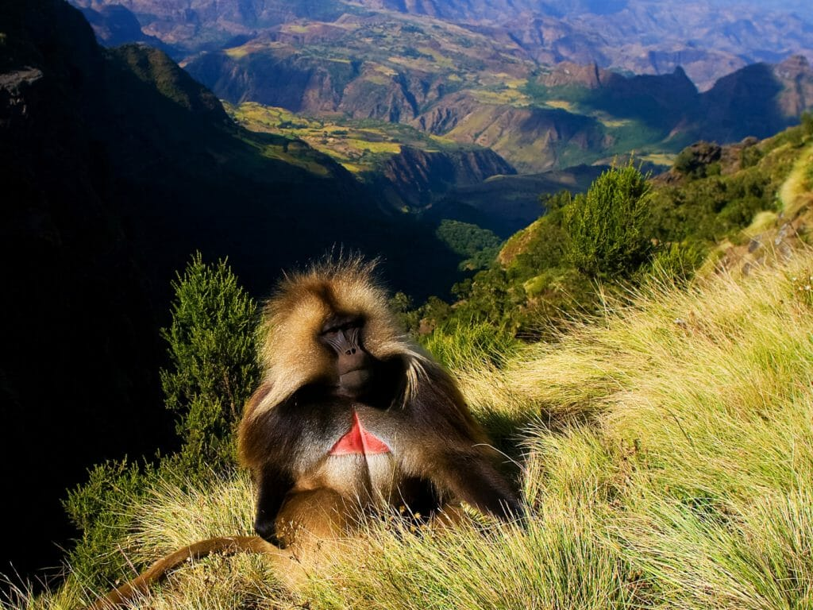
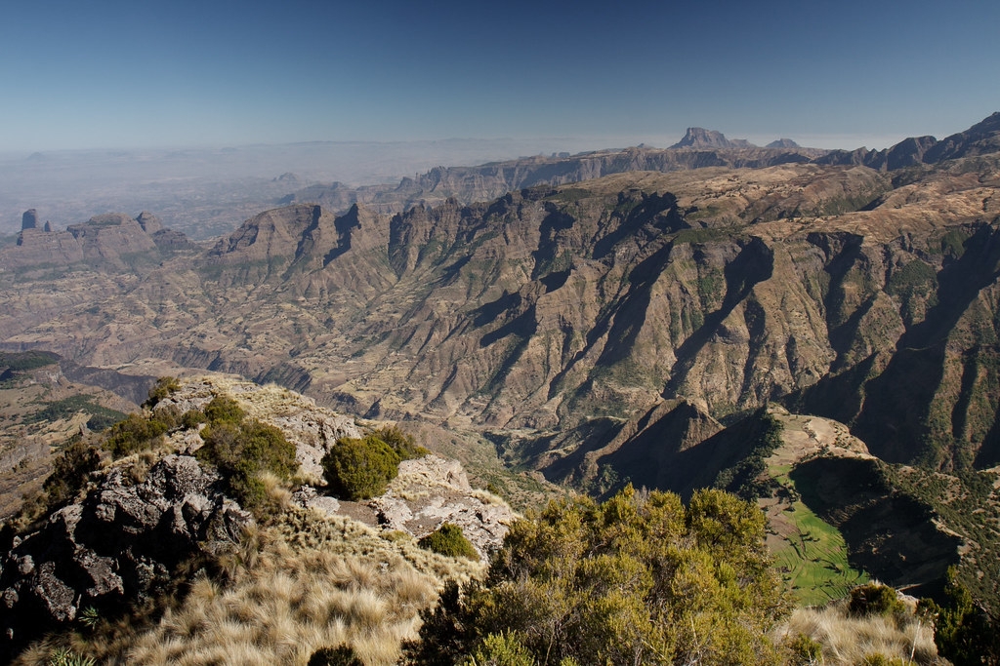
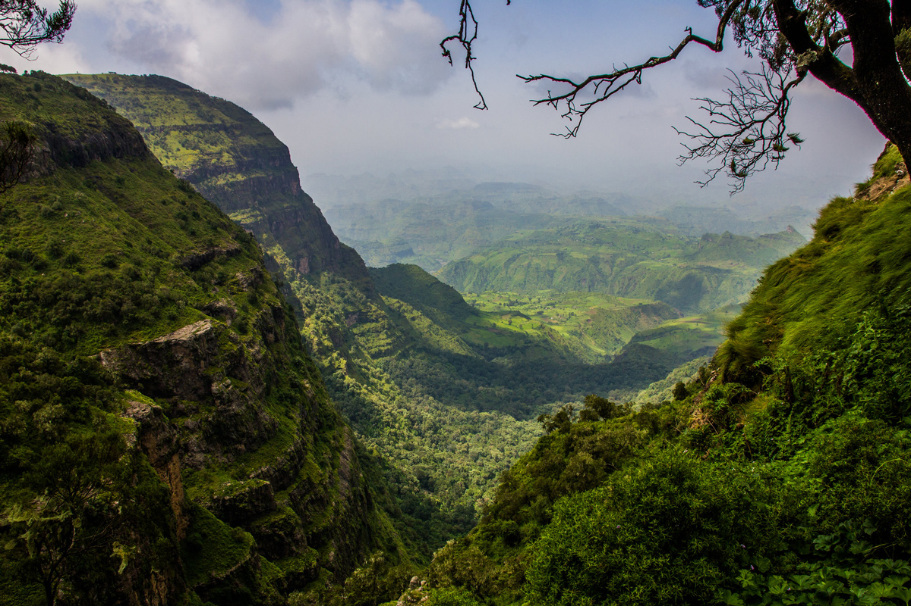

Semien Ethiopia national Park
The Number One Destination in Africa for Nature Lovers.





The Simien Mountains in northern Ethiopia, north east of Gondar in Amhara region, are part
of the Ethiopian Highlands. They are a WorldSite and include tMountains National mountains consist of plateaus separated by varising to pinnahighest Ethiopianis Ras Dejen at 4,550 m with the second highest peak of Kiat 4,453 m; othepeaks include Mount4,437 m.
The Simien Mounremarkable as beithe few spots inAfrica where snow regularly falls. Because of their gorigins, the mounalmost unique, South Africa's Drakensberg range having been formed inmanner and thus similar.